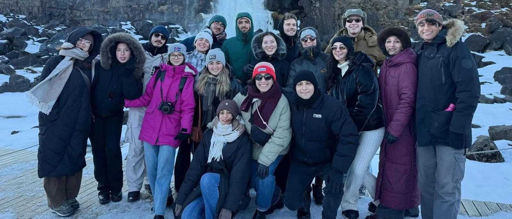
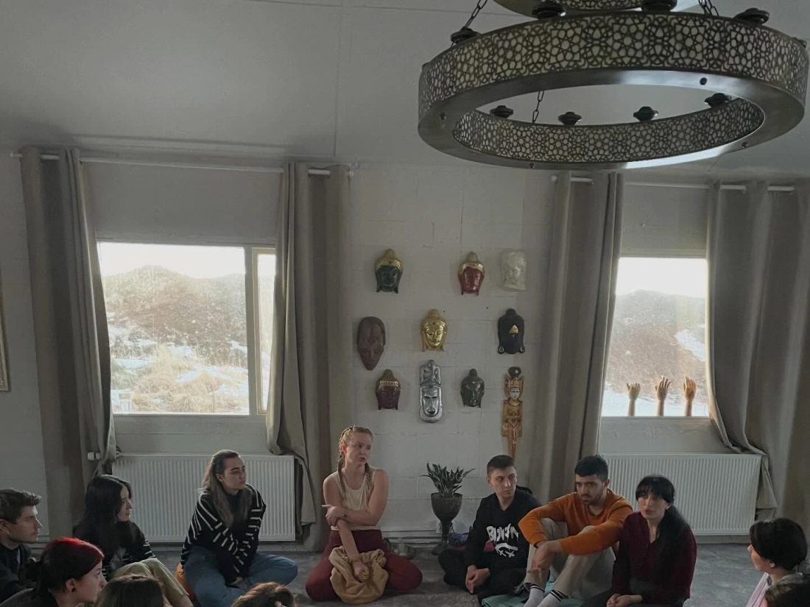
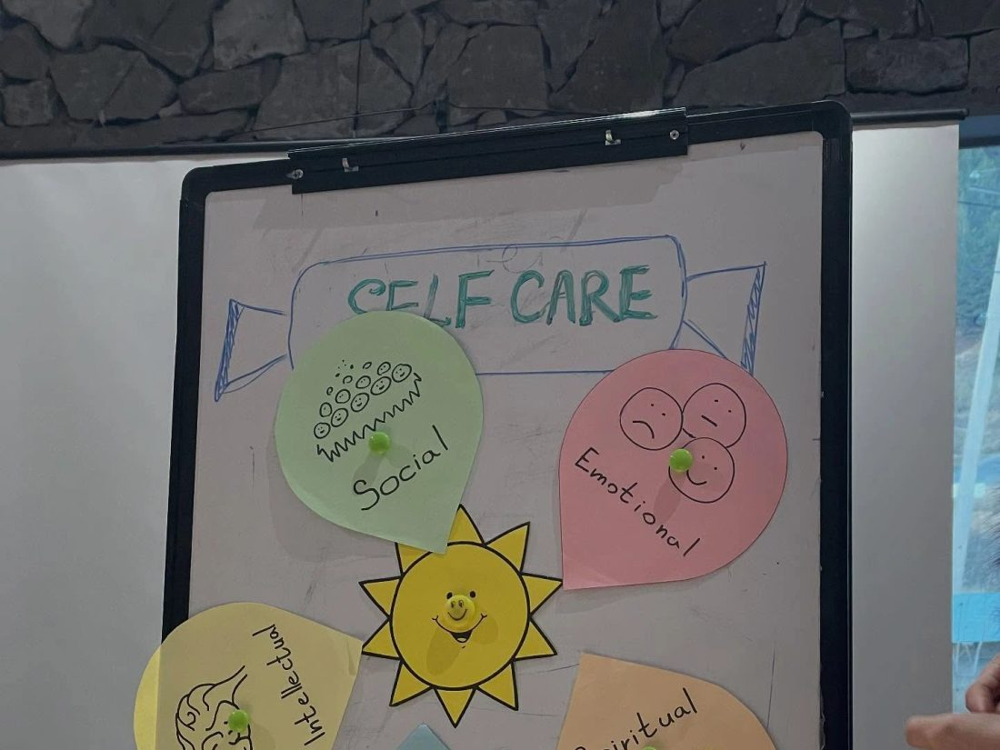
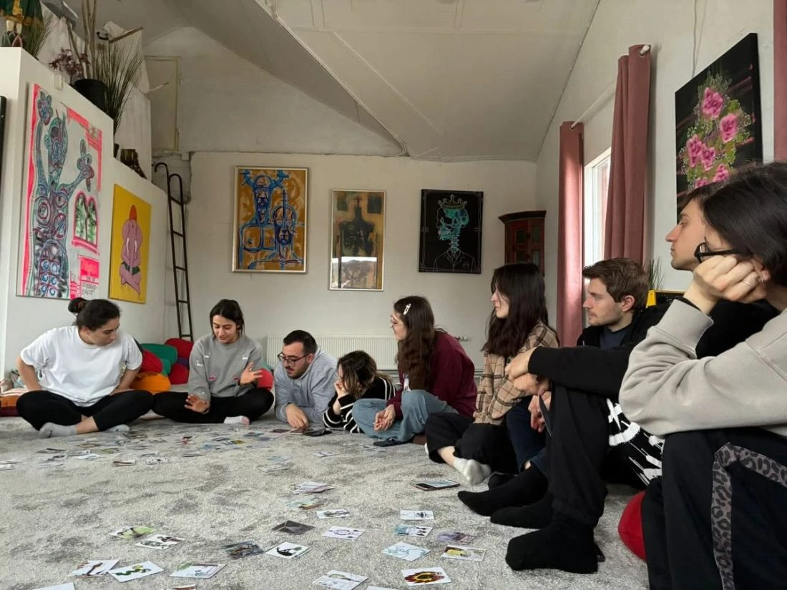
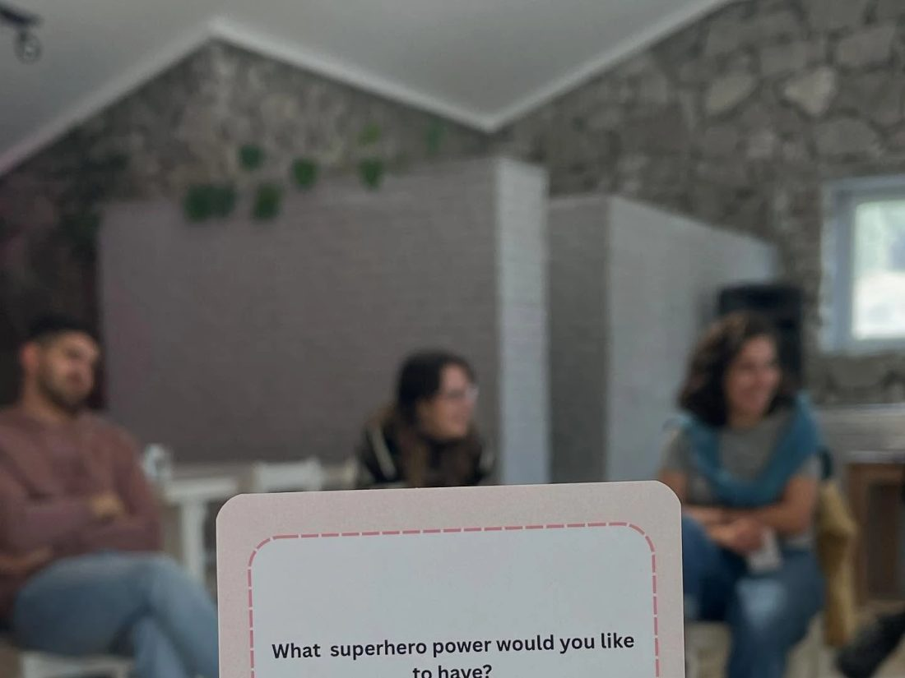
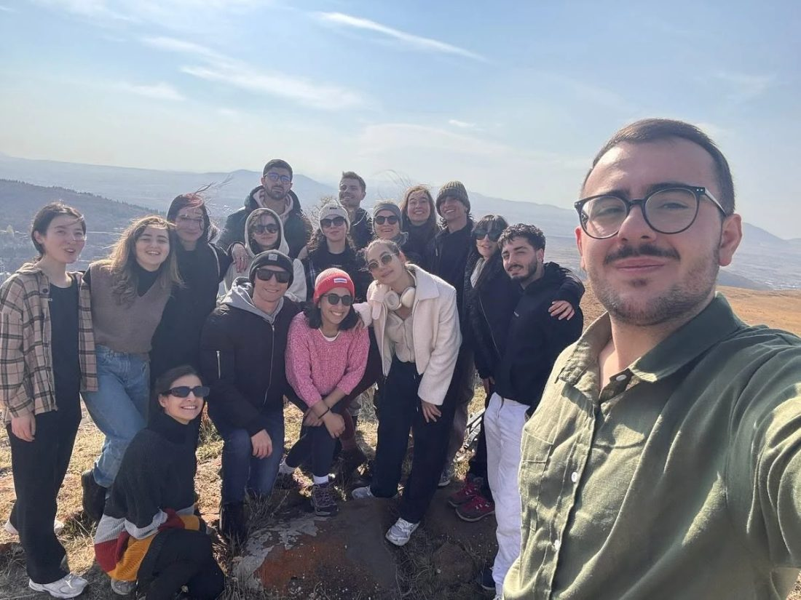
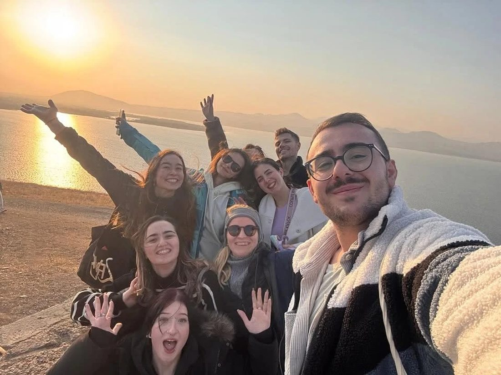

IceMenia — Two Lands, One Journey
A two-phase youth exchange between Armenia and Iceland, exploring mental health and self-care — looking after our minds the way we look after the planet.

About the project
IceMenia — Two Lands, One Journey is a two-phase Erasmus+ youth exchange between Armenia and Iceland, created by Circa with our Armenian partner UniGrowth. It brings young people from both countries together around a single question: how do we look after our minds the way we try to look after the planet?
Across two phases — one hosted in each country — participants moved between guided reflection and shared adventure: meditation and self-care workshops, honest conversations about well-being, playful connection exercises, and time outdoors. From Iceland's snow-covered waterfalls to the hills and lakes of Armenia, two very different landscapes became the backdrop for the same journey inward. Participants left with a toolkit of everyday self-care practices — and friendships across two lands.
What we explored
- Guided mindfulness and meditation sessions
- Mapping self-care across five dimensions — social, emotional, intellectual, physical and spiritual
- Reflective tools — association cards, journaling and connection prompts
- Open conversations that help reduce the stigma around mental health
- Cultural exchange and time in nature across both countries
Two lands, two phases
The exchange unfolded in two chapters. In Armenia, participants gathered for reflection circles, self-care workshops and hikes through the surrounding hills and lakes. In Iceland, the group continued the journey amid winter landscapes — meditation indoors and wonder outdoors, from geothermal calm to frozen waterfalls. Two countries, one shared conversation about well-being.
Gallery





